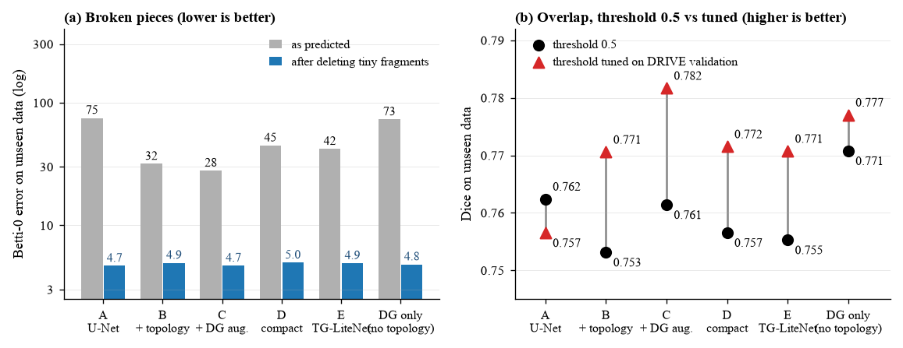
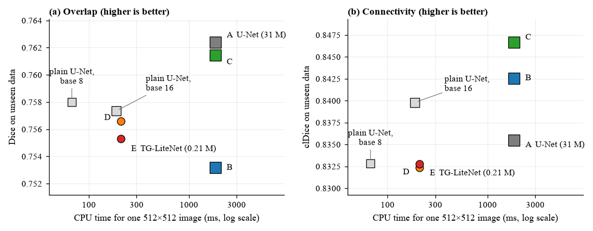
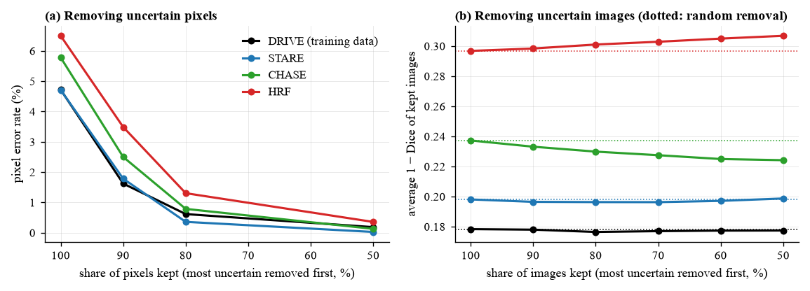

Parameters against the standard U-Net
147x
fewer parameters: 0.21 M against 31 M.
U-Net31 M
TG-LiteNet0.21 M
Trained on one dataset, tested on three. We built it, then tried to break it. Explore every result, run the model in your browser, and see what actually worked.
fewer parameters: 0.21 M against 31 M.
models trained, 5 seeds per stage
test images used for tuning
The topology trick helped less than it first appeared, and a plain small U-Net matches our network. The controls are the real finding.
See the verdictDoctors check the tiny blood vessels at the back of the eye to spot diseases such as diabetes early. Tracing them by hand is slow, so we ask a computer. But a model that learns on one camera can stumble on another, and a vessel with a gap in it can look almost right while being wrong where it matters.
A cut vessel barely changes the usual score, yet it breaks the connectivity doctors measure. We use scores that notice gaps.
Train on DRIVE only, test on STARE, CHASE_DB1 and HRF. Like learning one person's handwriting, then reading someone else's.
A rural clinic may have a basic laptop. The standard U-Net has 31 million numbers to learn; ours has 0.21 million.
Pick a dataset. The brightness, size and vessel width all change, and that is the shift the model has to survive.
Click any step. Solid steps run at test time; dashed steps exist only during training and cost nothing afterwards.
These are the real predictions of our trained models on held-out photos. Slide the threshold and the fragment filter, and watch the score and the number of broken vessel pieces update live.
Try this: pick the U-Net, then drag the fragment slider to about 150. The vessel-piece count collapses while the Dice barely moves. That is why a simple clean-up step explains most of the topology gain. Scores use the model's working resolution, so they differ slightly from the paper.
For Betti-0 error (the number of broken pieces) lower is better. Hover any bar for exact values.
None of these needs retraining, and without them we would have drawn the wrong conclusion.
Every model drops to about 5 broken pieces, the plain U-Net included (75 to 4.7).
Topology-trained models then score best: 0.782 against 0.757 for the U-Net.
Without resizing, the U-Net collapses (0.768 to 0.637); the compact models hold.
Toggle a chip to light up the matching rows.

Deleting tiny fragments gives every model about 5 broken pieces. The topology loss's big win was mostly clean-up.
Betti-0 error, 5 seeds. The U-Net goes from 75.0 to 4.7.
With the threshold tuned on validation images, the topology-trained models have the best Dice.
Stage C 0.782 against 0.757 for the plain U-Net. The Dice cost at 0.5 was mostly calibration.

Small does not mean fast. A plain base-16 U-Net matches our network at the same speed and is better connected.
147 times fewer parameters, but only 8.8 times faster on a laptop CPU.

The uncertainty map finds some wrong pixels, but it cannot reliably tell us which whole images to distrust.
At 20 times the cost, we would drop MC dropout.

The thinnest vessels are missed most, and most false alarms are vessels drawn slightly too thick.
Single-run error analysis on unseen data, threshold 0.5.
Each dot is one model. Higher is more accurate, further left is faster, and bigger dots have more parameters. Hover for details.
Depthwise convolutions do little arithmetic per byte of memory read, so counting operations over-states the speed-up.
A base-8 U-Net with the same operation count runs in 67 ms (TG-LiteNet: 209 ms) with the same Dice.
A base-16 U-Net (1.94 M parameters) is as fast (187 ms) and better connected. That is what we would deploy on a CPU-only clinic machine.
We run the model 20 times with random dropout. Where the runs disagree, it is unsure. If that works, removing the unsure parts should lower the error.
Removing the 10% most uncertain pixels cuts the error from 4.7% to 1.6% on DRIVE and from 6.5% to 3.5% on HRF.
Removing the most uncertain images is no better than removing random ones, and worse on HRF.
An error analysis of the saved predictions (seed 0, unseen datasets, threshold 0.5).
We taught a small computer program to trace blood vessels in eye photos, and we wanted it to stay accurate on photos from other cameras while staying tiny. Our clever trick to keep the vessels connected helped a little, but extra checks showed a simple clean-up step gave nearly the same benefit to every program. The real lesson is not that our trick is amazing. It is that we tested honestly and found out what actually works.
Every number on this page is generated from the saved runs by scripts in the repository. Run it on your own machine.
# set up
pip install -r requirements.txt
pip install -e .
pytest -q
python scripts/download_data.py
python scripts/prepare_data.py
# run the study (resumable)
python scripts/run_experiments.py --groups primary --native-eval
python scripts/aggregate_results.py
python scripts/make_report_assets.py
python scripts/failure_analysis.py
python scripts/make_website_data.py